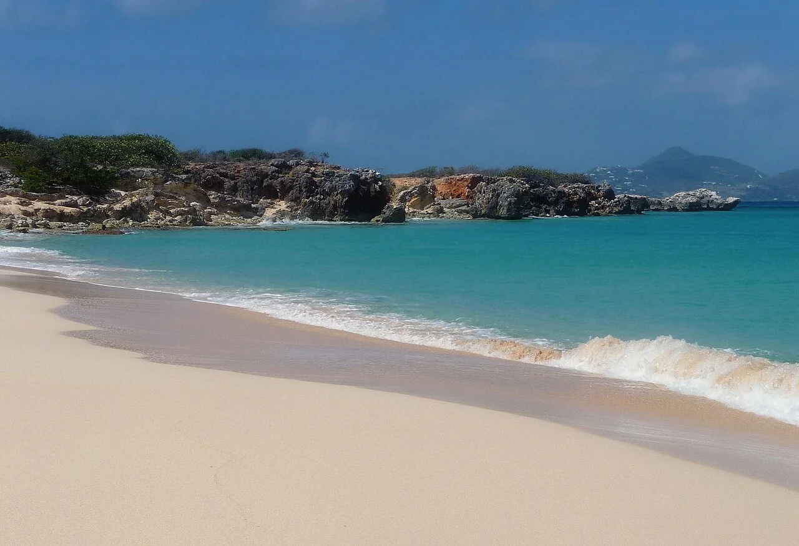

Île Tintamarre — Saint-Martin
Île Tintamarre, Saint-Martin · snorkeling, baignade

Île inhabitée à environ 3 km au nord-est de Saint-Martin, dans la réserve naturelle nationale. On mouille au sud-ouest, devant la Baie Blanche et sa plage de sable blanc. La réserve décrit un très joli site de snorkeling le long de la pointe nord, à quelques coups de palmes, et l’office de tourisme parle d’une eau claire où l’on croise parfois une tortue. La saison sèche, de décembre à avril, est la plus agréable : soleil presque constant et très peu de pluie.
- Lieu
- Île Tintamarre, Saint-Martin
- Niveau
- Variable selon les conditions
- Activités
- snorkeling, baignade
- Type d'eau
- Mer / océan
- Coordonnées
- 18.12, -62.98 (position approximative du secteur)
Dangers à connaître
- Réserve naturelle : 17 bouées jaunes sont installées, et un bateau de moins de 33 pieds peut jeter l’ancre seulement sur un fond de sable.
- Seul lieu de nidification du noddi brun, une espèce en danger : respecte la tranquillité de la zone.
- Dans la réserve, prendre de l’argile et mouiller à North Curve Bay sont interdits.
- Île très exposée aux éléments : soleil fort et vents puissants, selon l’office de tourisme.
- Mets au moins des tongs pour marcher derrière la plage.
Le conseil d'Ocean Buddy
En bateau, amarre-toi à l’une des bouées jaunes de la réserve ; si tu mouilles, reste sur le sable.
Ouvrir dans Ocean Buddy Télécharger sur l'App Store
Source : Fiche Ocean Buddy · décembre 2026 · d’après la Réserve naturelle de Saint-Martin, l’office de tourisme de Saint-Martin et Wikipédia · à vérifier localement.